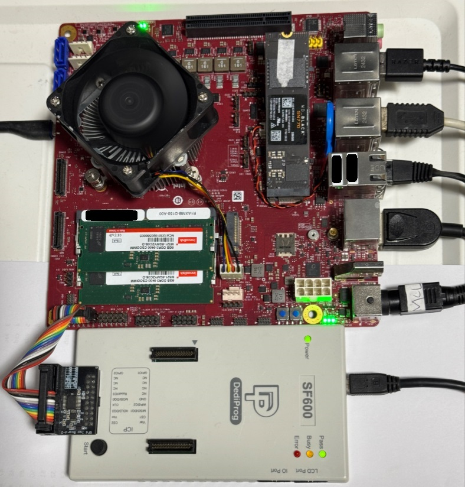

Arrow Island Board
The Arrow Island Reference Design is a platform developed by Intel, featuring Core Ultra Series 2 Inel processors, specifically tailored for network and edge applications.
Prerequisites
To start developing SBL, the following equipment, software and environments are required:
DediProg SF600 Programmer
Mirco USB cable
Windows host or Linux host (see Building on Windows or Building on Linux for details)
Internet access
Board Setup
{kind=link}
Before You Start
Warning
As you plan to reprogram the SPI flash, it’s a good idea to backup the pre-installed BIOS image first.
Boot the board and enter BIOS setup menu to get familiar with the board features and settings.
For Arrow Island, serial port connector is labelled DEBUG on board
Note
Configure host PuTTY or minicom to 115200bps, 8N1, no hardware flow control.
Building
Arrow Island Reference Design Board is based on Intel ARL-H. To build:
python BuildLoader.py build arlh
The output image is generated under Outputs\arlh directory.
Stitching
Option 1: Stitch SBL image with factory BIOS IFWI image using StitchLoader.py:
python Platform\ArrowlakeBoardPkg\Script\StitchLoader.py -i <BIOS_IFWI_IMAGE> -s Outputs\arlh\SlimBootloader.bin -o <SBL_IFWI_IMAGE> -p 0xAA00001B
<BIOS_IFWI_IMAGE> : Input file. Factory BIOS extracted from Arrow Island board.
<SBL_IFWI_IMAGE> : Output file. New IFWI image with SBL in BIOS region.
-p <value> : 4-byte platform data for platform ID (e.g. 1B) and debug UART port index (e.g. 00).
Refer to Stitch Tool for more details.
Note
StitchLoader.py script works only if Boot Guard in the base image is not enabled, and the silicon is not fused with Boot Guard enabled. If Boot Guard is enabled, please use StitchIfwi.py script instead.
Option 2: Stitch SBL image with firmware ingredients using StitchIfwi.py:
Note
Ensure all the stitch components are ready in the stitching folder.
python Platform\ArrowlakeBoardPkg\Script\StitchIfwi.py -b legacy -s Outputs\arlh\Stitch_Components.zip -c Platform\ArrowlakeBoardPkg\Script\StitchIfwiConfig_arlh.py -w stitching -p arlh -o isd -d 0xAA00001B
The output image is generated under current working directory.
Flashing
Flash the generated SBL_IFWI_IMAGE to Arrow Island board using a SPI programmer. Header J9A1 on the board should be used.
Note
Please ensure:
The alignment/polarity when connecting Dediprog to the board.
The power to the board is turned off while the programmer is connected (even when not in use).
The programmer is set to update the flash from offset 0x0.
SlimBootloader Binary for Capsule Image
The SlimBootloader.bin image generated from the build steps above can be used to create a capsule image for firmware update:
python BootloaderCorePkg\Tools\GenCapsuleFirmware.py -p BIOS Outputs\arlh\SlimBootloader.bin -k <priv_key> -o FwuImage.bin
Refer to Generating capsule for more details.
Triggering Firmware Update
Refer to Firmware Update on how to trigger firmware update flow.
Below is an example to trigger firmware update in SBL shell:
Copy
FwuImage.bininto root directory on FAT partition of a USB driveBoot and press any key to enter SBL shell
Type command
fwupdatefrom shell
Observe SBL resets the platform and performs update flow. It resets multiple times to complete the update process.